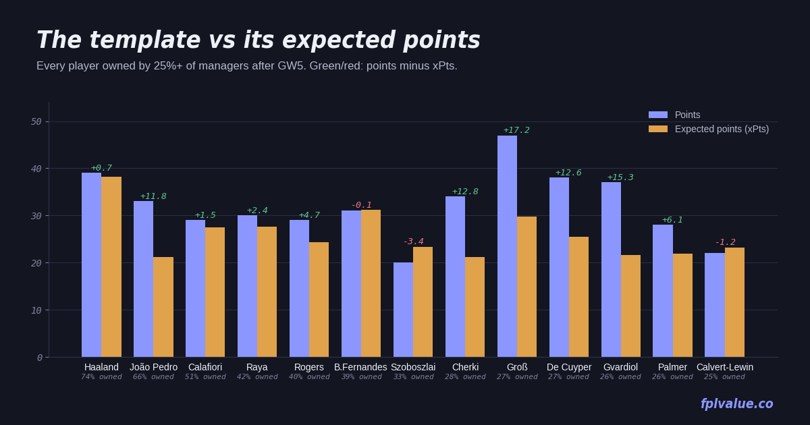

The template's problem is fitness, not form
The GW4 check found nine players over 25% ownership and eight of them earning it. A week later the template has widened to thirteen, and the ranking by performance barely moved. What did move is the injury column: João Pedro (66% owned) did not play in GW5 and Palmer (26%) is carrying a muscular problem, both flagged at 75%. The break helps, but it also means three weeks of not knowing. Numbers are season totals after GW5, from the dashboard.

The template, ranked by ownership
| Player | Pos | Price | Own | Pts | xPts | Δ | xGI | GW5 |
|---|---|---|---|---|---|---|---|---|
| Haaland MCI | FWD | £15.6m | 73.6% | 39 | 38.3 | +0.7 | 4.95 | 6 |
| João Pedro CHE ▲ 75% | FWD | £7.7m | 66.0% | 33 | 21.3 | +11.8 | 2.36 | — |
| Calafiori ARS | DEF | £5.8m | 50.6% | 29 | 27.5 | +1.5 | 1.29 | 1 |
| Raya ARS | GKP | £6.1m | 42.2% | 30 | 27.6 | +2.4 | — | 1 |
| Rogers CHE | MID | £7.7m | 40.3% | 29 | 24.3 | +4.7 | 2.95 | 2 |
| B.Fernandes MUN | MID | £11.9m | 38.8% | 31 | 31.2 | −0.2 | 3.88 | 2 |
| Szoboszlai LIV | MID | £7.0m | 33.2% | 20 | 23.4 | −3.4 | 2.24 | 2 |
| Cherki MCI | MID | £7.8m | 28.2% | 34 | 21.2 | +12.8 | 2.26 | 8 |
| Groß BHA | MID | £5.8m | 27.4% | 47 | 29.8 | +17.2 | 2.63 | 14 |
| De Cuyper BHA | DEF | £4.9m | 27.1% | 38 | 25.4 | +12.6 | 2.22 | 6 |
| Gvardiol MCI | DEF | £5.7m | 26.5% | 37 | 21.7 | +15.3 | 0.96 | 4 |
| Palmer CHE ▲ 75% | MID | £9.7m | 26.3% | 28 | 21.9 | +6.1 | 2.10 | 2 |
| Calvert-Lewin LEE | FWD | £6.0m | 25.1% | 22 | 23.2 | −1.2 | 3.08 | 2 |
Twelve of thirteen at or near expected, and the only one clearly behind is the same one as last week. Two things changed at the edges. Calvert-Lewin is back in the template at 25.1% and is quietly one of its better-founded members: 3.08 xGI is more than Cherki, João Pedro or Rogers, from a £6.0m forward. And Mbeumo has fallen further out (20.8%) after another blank, with the fourth-best xGI of any midfielder in the game. If the template has a blind spot this season it is Brentford and United players who are creating chances without finishing them.
GW5 was a blank week for the template as a whole. Only Groß (14) and Cherki (8) scored more than six, and the Arsenal trio managed three points between them after losing 3–0 at Brighton. That is one bad week, not a trend; Arsenal still have the best defence in the league by xG conceded (4.03 in five games, next best is Forest on 4.77) and their next five include Leeds and Hull at home.
João Pedro 66.0% owned · £7.7m · doubtful
The most-owned non-premium player in the game missed GW5 with a knee injury and is listed at 75% for GW6. His season so far is 33 points from 21.3 expected, so even a fit João Pedro is running well ahead of his chances, and two-thirds of managers are now holding a player who might miss the first game back. The break makes this a hold by default: there is no deadline to react to and the flag may clear. If it doesn't, the same-price forward bracket is thin. Havertz (£7.6m, 8.5%) is the only one with comparable expected output (18.8 xPts, +0.2) and Arsenal's fixtures are kind; Thiago (£7.8m) has the better underlying numbers (3.29 xGI) but nine points fewer than his xPts and one goal all season. Neither is a clear upgrade on a fit João Pedro, which is why the answer is wait.
Szoboszlai 33.2% owned · £7.0m · Δ −3.4
Still the one template player behind expected, and after another two-point week the case has not changed: 2.24 xGI is fine, one goal and no assists is not, and Liverpool's returns are going to Isak (four goals in five) and Gakpo. Last week's alternative was Tavernier, who then blanked in a 0–1 defeat. He remains the answer.
| Alternative | Price | Own | Pts | xPts | xGI | xGI/90 |
|---|---|---|---|---|---|---|
| Tavernier BOU | £6.1m | 6.7% | 31 | 29.0 | 2.62 | 0.60 |
| Dewsbury-Hall EVE | £6.6m | 6.0% | 20 | 21.0 | 1.82 | 0.36 |
| Wirtz LIV | £7.3m | 5.8% | 18 | 17.4 | 1.40 | 0.31 |
| Anderson MCI | £6.3m | 4.0% | 15 | 17.3 | 0.78 | 0.17 |
Tavernier now leads Szoboszlai 31 to 20 on points and 29.0 to 23.4 on expected, at £0.9m less, and the GW5 blank was one poor Bournemouth performance against the league's best away side rather than a change in his role. Bournemouth's fixtures are middling through GW9 and then soften for six. Below him the bracket is empty of anyone interesting: Dewsbury-Hall is the honest mid-price plodder, Wirtz has the same Liverpool problem as Szoboszlai with worse numbers. The cheaper option is still Groß at £5.8m, who is in the template already for good reason.
Cherki 28.2% owned · £7.8m · Δ +12.8
Flagged last week for 218 minutes in four games; now 302 in five, so a 60-minute player scoring 34 points from 21 expected. The eight points in GW5 (in a 5–3 win with 8 goals in the game) keep the owners happy for another week, but this is the template's most over-performing player per minute, and City have Liverpool (A) and Villa (A) in the next three. Cunha (£7.9m, 5.7%) is the same-price alternative with more minutes, 26 points, 10 in GW5, and United's kind GW6–8 run. Not a must-do, but if you want to sell Cherki while his price is high, that is where the money goes.
The wider bracket check
Among forwards under £7m with 225+ minutes, the three highest expected totals are Barry (26.5, £5.6m, 8.1%), Brobbey (24.1, £5.7m, 6.8%) and Calvert-Lewin (23.2, £6.0m, 25.1%). Calvert-Lewin is the template's choice and he is a reasonable one, but Barry has more expected involvement (3.65 xGI to 3.08) for £0.4m less, and Brobbey, whose 17 points in GW5 came from a 14.5-xPts performance rather than luck, is now the one being bought (156k transfers in). Among defenders under £5m the story is unchanged: Bogle (£4.6m, 6.7%) is the best-value player in the game and still owned by one manager in fifteen, De Cuyper (27.1%) is in the template and deserves it, and Schuster (£4.5m, 0.3%) is the new name to watch after three starts at 7 points a game.
Methodology: template defined as ownership ≥ 25%. Alternatives are the same position, priced within £0.7m below to £0.3m above, owned by under 10%, available, and with 225+ minutes, ranked by xPts. Injury flags are the FPL API's chance-of-playing figure. xPts and Δ as defined on the metrics page. Data: FPL API after GW5.